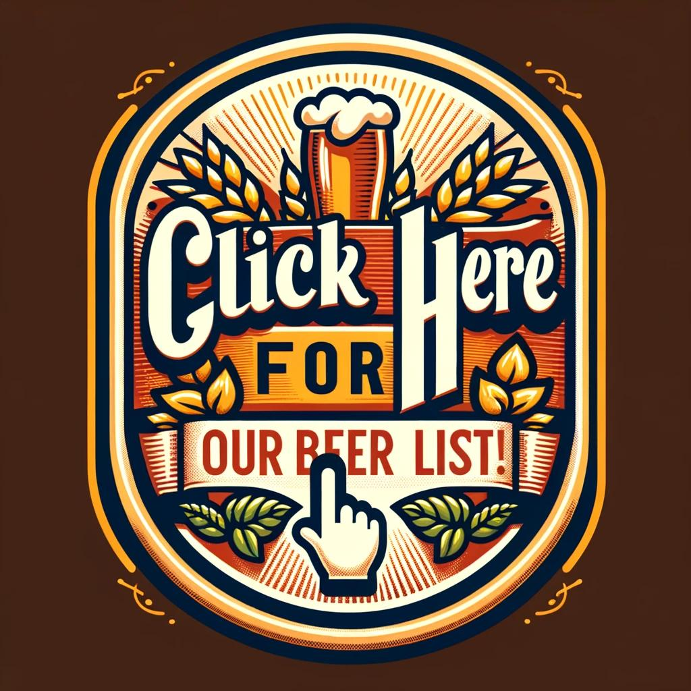
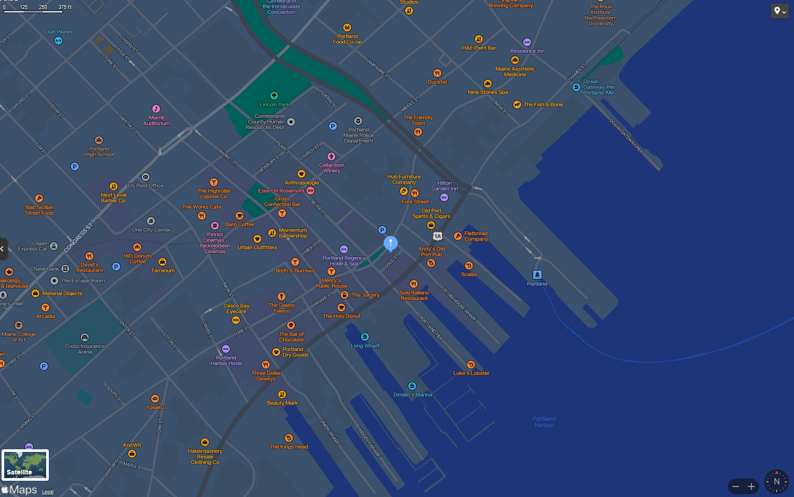

About Us
Welcome to Hop Haven Craft Brewery!
Tucked away in the vibrant heart of the city, Hop Haven Craft Brewery has been a beacon of artisanal brewing excellence since it first opened its doors in 2016. Birthed from the collective vision of a tight-knit group of beer enthusiasts, our brewery has blossomed into a sanctuary for those who cherish the intricate and nuanced flavors of craft beer.
At Hop Haven, we are driven by the belief that extraordinary beer has the unique ability to unite people. Our goal is to craft not just beers, but memorable experiences that appeal to a broad spectrum of tastes. Every glass we pour is a reflection of our dedication to creativity, impeccable quality, and the revered art of brewing.
Our brewing philosophy is a blend of time-honored methods and innovative approaches, producing a spectrum of beers that range from classic profiles to daring new ventures. Whether it's our aromatic IPAs, velvety stouts, crisp lagers, or avant-garde ales, we offer a diverse array that delights both seasoned aficionados and those new to the craft beer journey.
Community is the cornerstone of Hop Haven's ethos. We're more than just a brewery - we're a place where lasting memories are formed. From hosting community events and collaborating with local artisans, to advocating for sustainability, we're dedicated to making a meaningful impact in the neighborhood.
We invite you to step into our world and share a pint with us! Let's celebrate the craft of brewing, the delight of beer, and the communal spirit that binds us.
Here's to the art of craft brewing, the spirit of innovation, and the communal ties that make Hop Haven a special place for everyone!
Our Current Craft Selection
Discover our ever-changing selection of craft beers!
Current Craft Beer Selection:
Contact and Location
123 Craft Beer Lane, Brewtown, USA
Phone: (123) 456-7890